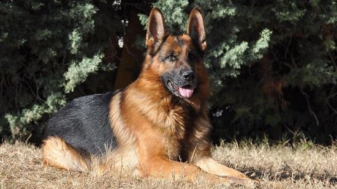

Tanto Rusia como los Estados Unidos afirman ser el lugar de origen del husky siberiano. Fue la raza Chukchi del noreste de Asia quien desarrolló esta raza hace más de tres mil años para que les ayudaran en su vida nómada como tiradores de trineos.
Está claro que esta raza tiene antepasados spitz.

Los huskies siberianos son clásicos perros del norte.
Son inteligentes, aunque algo independientes y tozudos.
Se sienten realizados con la compañía humana, aunque necesitan un adiestramiento firme y amable desde que son cachorros.
Son perros criados para correr, y su amor por esta actividad en ocasiones puede superar a su amor por sus propietarios. Los huskies siberianos tienden a ser simpáticos con las personas, incluidos los niños.
El husky siberiano es un perro de tamaño medio ligeramente más largo que alto cuya altura oscila entre los 50 y los 60 cm y el peso entre los 20 y los 35 kg.
El husky siberiano tiene las orejas erguidas y los ojos de marrones a azules o también dispares.
Lleva el cuello recto y la línea superior está nivelada. La cola, bien cubierta de pelo, forma una hoz hacia arriba o bien se extiende hacia atrás.
Tienen un pelo muy denso y afelpado con una importante capa interna. Tienen un pequeño collar de pelo alrededor del cuello, pero no tienen flecos largos en las patas ni en la cola. Los colores van del negro al blanco pasando por todas las opciones intermedias. Las mayoría de estos perros tienen marcas blancas, especialmente en el pecho y las patas.